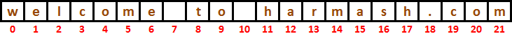
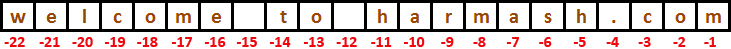
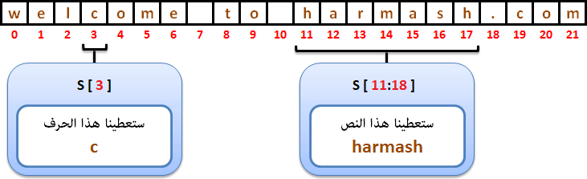
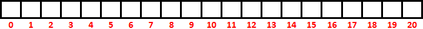

Pythonالتعامل مع النصوص في بايثون
مفهوم النصوص في بايثون
في عالم البرمجة, نقول للنص "String" سواء كان يتألف من حرف واحد, كلمة, جملة أو نص كبير جداً.
و من هذا المنطلق نستنتج أن النص عبارة عن سلسلة من الأحرف ليس لها حجم محدد.
في بايثون تم إنشاء الكلاس أو النوع str خصيصاً لتخزين القيم النصية.
معلومة تقنية
النوع str يعتمد على الترميز Unicode و هذا يعني أنك لن تواجه أي مشكلة عند التعامل مع نصوص عربية, إنجليزية, فرنسية إلخ..
المتغيرات النصية في بايثون ( التي نوعها str ) تعتبر Immutable. و هذا يعني أنك عندما تقوم بتعريف أي متغير تخزن فيه نص, فإن هذه النص سيحجز له مكان في الذاكرة مهما كان حجمه. و إذا قمت بإعطاء قيمة جديدة لهذا المتغير فإنه سيتم حذف القيمة القديمة من الذاكرة و إنشاء مكان جديد في الذاكرة و وضع القيمة الجديدة فيه لأنه لا يمكن تعديل نفس القيمة في نفس المكان في الذاكرة.
طريقة تعريف str
لتعريف نص في بايثون نستخدم الرمز ' أو الرمز " أو الرمز """.
هل يوجد فرق بين هذه الرموز؟
بالنسبة للرمز ' و الرمز " فإنه لا يوجد أي فرق بينهما. و يمكن إستخدام أي واحد منهما لتعريف نص يتألف من سطر واحد.
بالنسبة للرمز ''' و الرمز """ فإنه لا يوجد أي فرق بينهما. و يمكن إستخدام أي واحد منهما لتعريف نص كبير يتألف من عدة أسطر.
في المثال التالي قمنا بتعريف ثلاث متغيرات تحتوي على قيم نصية. لاحظنا أننا قمنا بتعريف كل متغيير بواسطة رمز مختلف.
المثال الأول
Test.py
# هنا قمنا بتعريف ثلاث متغيرات تحتوي على قيم نصية
name = 'Mhamad'
job = "Programmer"
message = '''This string that will span across multiple lines. No need to use newline characters for the next lines.
The end of lines within this string is counted as a newline when printed.'''
# هنا قمنا بعرض قيم المتغيرات النصية بأسلوب مرتب
print('Name: ', name)
print('Job: ', job)
print('Message: ', message)
•سنحصل على النتيجة التالية عند التشغيل.
Name: Mhamad
Job: Programmer
Message: This string that will span across multiple lines. No need to use newline characters for the next lines.
The end of lines within this string is counted as a newline when printed.
في المثال التالي قمنا بتعريف نص يحتوي على نفس الرموز التي تستخدم لتعريف النصوص.
المثال الثاني
Test.py
# يحتوي على قيمة نصية text هنا قمنا بتعريف متغير إسمه
text = """In this line we print 'single quotations'
In this line we print "double quotations" """
# text هنا قمنا بعرض قيمة المتغير
print(text)
•سنحصل على النتيجة التالية عند التشغيل.
In this line we print 'single quotations'
In this line we print "double quotations"
مفهوم الـ Concatenation
Concatenation تعني وضع سلسلة من النصوص بجانب بعضها لعرضها كنص واحد. و هذا الأمر ستحتاجه في أي تطبيق.
فمثلاً, في البرامج أو المواقع التي تستخدمها تلاحظ أنه عند إنشاء حساب جديد يطلب منك أن تدخل إسمك على مرحلتين كالتالي:
- الإسم ( First Name ).
- إسم العائلة ( Last Name ).
بعد أن تنشئ حسابك تلاحظ أنه قام بعرض إسمك الكامل ( الإسم + إسم العائلة ).
عند وضع الإسمين بجانب بعضهما و كأنهما نص واحد يكون المبرمج فعلياً قد قام بدمجهما فقط و ليس إعادة كتابتهما من جديد.
في المثال التالي سنقوم بتعريف المتغير first_name لنضع فيه الإسم, و المتغير last_name لنضع فيه إسم العائلة, و المتغير full_name لنضع فيه الإسم و إسم العائلة.
مثال
Test.py
# و وضعنا فيه نص يمثل الإسم first_name هنا قمنا بإنشاء المتغير
first_name = 'Mhamad'
# و وضعنا فيه نص يمثل إسم العائلة last_name هنا قمنا بإنشاء المتغير
last_name = 'Harmush'
# و أضفنا بينهما مسافة فارغة last_name و إسم العائلة الموجود في المتغير first_name و وضعنا فيه الإسم الموجود في المتغير full_name هنا قمنا بإنشاء المتغير
full_name = first_name + ' ' + last_name
# و يالتالي سيتم عرض الإسم الكامل الذي قمنا بدمجه و وضعه فيه full_name هنا عرضنا قيمة المتغير
print(full_name)
•سنحصل على النتيجة التالية عند التشغيل.
Mhamad Harmush
طرق دمج النصوص
يمكنك تطبيق الـ Concatenation في بايثون بطريقتين:
الدمج التلقائي للنصوص
في حال وضعت قيمتين نصيّتين بجانب بعضهما و وضعت بينهما مسافة فارغة ( أو عدة مسافات فارغة ) فإن مترجم بايثون سيقوم بدمجهمها لك بشكل تلقائي.
مثال
Test.py
s = 'Mhamad' ' Harmush' # s هنا قمنا بوضع قيمتين نصيّتين بجانب بعضهما و قمنا بتخزينهما في المتغير
print(s) # لنتأكد من أنه قد تم دمج النصين بشكل صحيح s3 هنا عرضنا قيمة المتغير
•سنحصل على النتيجة التالية عند التشغيل.
Mhamad Harmush
الوصول لأحرف النص في بايثون
لنفترض أننا قمنا بتعريف متغير إسمه s و قيمته النص 'welcome to harmash.com'
مثال
s = 'welcome to harmash.com'
سيتم تخزين نص المتغير s في الذاكرة حرفاً حرفاً و بالترتيب كما في هذه الصورة التالية.
طرق الوصول لأحرف النص
في حال أردت الوصول لأحرف هذا النص, فأمامك خيارين:
الوصول لأحرف النص من جهة اليسار إلى اليمين. و هذا يحدث بشكل تلقائي عندما تستخدم أرقام أكبر أو تساوي 0 للوصول لهذه الخانات التي تحتوي الأحرف.
الوصول لأحرف النص من جهة اليمين إلى اليسار. و هذا يحدث بشكل تلقائي عندما تستخدم أرقام أصغر من 0 للوصول لهذه الخانات التي تحتوي الأحرف.
الوصول لأحرف النص من اليسار إلى اليمين
في حال أردت المرور على أحرف هذا النص من اليسار إلى اليمين, سيتم إعتبار أن الخانات قد تم ترقيمها إبتداءاً من الرقم 0 كالتالي.
معلومة: طريقة ترقيم الخانات تسمى (Forward Indexing).

في المثال التالي سنقوم بطباعة محتوى أول 7 خانات إبتداءاً من الجهة اليسرى و بالتالي سنحصل على الكلمة welcome.
مثال
Test.py
# يحتوي على نص s هنا قمنا بتعريف متغير إسمه
s = 'welcome to harmash.com'
# و بدأنا من اليسار s هنا قمنا بطباعة أول 7 أحرف موجودة في المتغير
print(s[0] + s[1] + s[2] + s[3] + s[4] + s[5] + s[6])
•سنحصل على النتيجة التالية عند التشغيل.
welcome
الوصول لأحرف النص من اليمين إلى اليسار
في حال أردت المرور على أحرف هذا النص من اليمين إلى اليسار, سيتم إعتبار أن الخانات قد تم ترقيمها إبتداءاً من الرقم 1- كالتالي.
معلومة: طريقة ترقيم الخانات تسمى (Backward Indexing).

في المثال التالي سنقوم بطباعة محتوى آخر 3 خانات إبتداءاً من الجهة اليمنى و بالتالي سنحصل على الكلمة com.
مثال
Test.py
# يحتوي على نص s هنا قمنا بتعريف متغير إسمه
s = 'welcome to harmash.com'
# و بدأنا من اليمين s هنا قمنا بطباعة آخر 3 أحرف موجودة في المتغير
print(s[-3] + s[-2] + s[-1])
•سنحصل على النتيجة التالية عند التشغيل.
com
معرفة عدد أحرف النص بواسطة الدالة len(s)
لمعرفة عدد أحرف أي نص نقوم باستدعاء الدالة len() و من ثم نمرر لها النص مكان الباراميتر s.
ملاحظة: المسافات الفارغة ( White Spaces ) أيضاً يتم حسابها.
مثال
Test.py
s = 'welcome to harmash.com' # s هنا قمنا بتعريف متغير نصي إسمه
print('Length of s =', len(s)) # len() الذي سترجعه الدالة s هنا قمنا بطباعة عدد أحرف (خانات) المتغير
•سنحصل على النتيجة التالية عند التشغيل.
Length of s = 22
مصطلحات تقنية
عدد أحرف النص يسمى Length.
رقم الخانة يسمى Index.
أرقام الخانات تسمى Indices.
إذا قمنا بأخذ جزء من النص. الجزء المأخوذ يسمى Substring.
أنت كمبرمج يمكنك إستغلال أرقام الخانات لتصل لمحتوى النص كالتالي.

تجزيء النص في بايثون بواسطة العامل []
لأخذ جزء من أي نص نعتمد على أرقام الخانات التي يتم إعطاءها لكل حرف في النص.
في المثال التالي سنقوم بعرض جزء محدد من النص الذي يحتويه المتغير s.
فعلياً, سنحدد أننا نريد عرض جميع الأحرف الموجودة ابتداءاً من الخانة رقم 11 وصولاً إلى ما قبل الخانة رقم 18.
المثال الأول
Test.py
# يحتوي على نص s هنا قمنا بتعريف متغير إسمه
s = 'welcome to harmash.com'
# s هنا قمنا بطباعة جميع الأحرف الموجودة إبتداءاً من الخانة رقم 11 وصولاً إلى الخانة الموجودة ما قبل الخانة 18 في المتغير
print(s[11:18])
•سنحصل على النتيجة التالية عند التشغيل.
harmash
في المثال التالي سنقوم بعرض جزء غير محدد من النص الذي يحتويه المتغير s.
فعلياً, سنحدد أننا نريد عرض جميع الأحرف الموجودة ابتداءاً من الخانة رقم 11 وصولاً إلى آخر خانة.
المثال الثاني
Test.py
# يحتوي على نص s هنا قمنا بتعريف متغير إسمه
s = 'welcome to harmash.com'
# s هنا قمنا بطباعة جميع الأحرف الموجودة إبتداءاً من الخانة رقم 11 وصولاً إلى آخر خانة موجودة في المتغير
print(s[11:])
•سنحصل على النتيجة التالية عند التشغيل.
harmash.com
في المثال التالي سنقوم بعرض جزء غير محدد من النص الذي يحتويه المتغير s.
فعلياً, سنحدد أننا نريد عرض جميع الأحرف الموجودة ابتداءاً من الخانة الأولى وصولاً إلى ما قبل الخانة رقم 11.
المثال الثالث
Test.py
# يحتوي على نص s هنا قمنا بتعريف متغير إسمه
s = 'welcome to harmash.com'
# s هنا قمنا بطباعة جميع الأحرف الموجودة إبتداءاً من الخانة الأولى وصولاً إلى ما قبل الخانة رقم 11 في المتغير
print(s[:11])
•سنحصل على النتيجة التالية عند التشغيل.
welcome to
الرموز التي من خلالها نعرف نهاية السطر في بايثون
الرمز الذي يتم وضعه للإشارة لنهاية السطر يختلف باختلاف أنواع التقنيات المستخدمة لحفظ البيانات التي نتعامل معها.
الرموز التالية كلها تعني نهاية السطر.
| الرمز |
معناه بالإنجليزية |
\n |
Line Feed |
\r |
Carriage Return |
\r\n |
Carriage Return + Line Feed |
\v or \x0b |
Line Tabulation |
\f or \x0c |
Form Feed |
\x1c |
File Separator |
\x1d |
Group Separator |
\x1e |
Record Separator |
\x85 |
Next Line (C1 Control Code) |
\u2028 |
Line Separator |
\u2029 |
Paragraph Separator |
في المثال التالي سنقوم بتخزين نص في المتغير s و ضعنا فيه ثلاث مؤشرات \n لجعل النص يظهر على ثلاث أسطر عند عرضه.
مثال
Test.py
# \n يحتوي على 3 موشرات s هنا قمنا بتعريف متغير نصي إسمه
s = 'This is fist line.\nThis is second line.\nThis is third line.'
# و الذي سيظهر على 3 أسطر s هنا قمنا بطباعة النص الموجود في المتغير
print(s)
•سنحصل على النتيجة التالية عند التشغيل.
This is fist line.
This is second line.
This is third line.
•لاحظ أن الرمز \n لم يظهر في نهاية كل سطر, بل أدى فقط للنزول على السطر.
ملاحظة
عندما تكون تستخدم هاتفك أو حاسوبك تقوم في العادة بالنقر على الزر Enter كلما أردت أن تنزل على سطر جديد.
الذي عليك معرفته كمبرمج هو أن سبب النزول على سطر جديد هو أنه قد تم إضافة رمز خاص بدون علمك في المكان الذي نقرت فيه على الزر Enter للإشارة إلى نهاية السطر. الرمز الذي يضافة يقال له مؤشر نهاية السطر ( End Of Line Flag ).
الدوال الجاهزة في الكلاس str للتعامل مع النصوص في بايثون
الكلاس str هو كلاس جاهز في بايثون, يحتوي على دوال كثيرة للتعامل مع محتوى النصوص, سواء للبحث عن أحرف أو كلمات أو جمل, تجزيء النص, تغيير الـ Case للأحرف, دمج النصوص إلخ..
سنقسم دوال الكلاس str إلى 5 فئات أساسية:
دوال للبحث (Searching).
دوال للتجزيء (Substring).
دوال للتبديل (Replacing).
دوال للمقارنة (Comparison).
دوال للمعالجة (Manipulation).
معلومة تقنية
عند التعامل مع أي دالة من دول الكلاس str, سواء كان شرح هذه الدالة يقول أن الدالة تبدأ من أول النص إلى آخره أو تبدأ من نهايته إلى أوله. تخيل دائماً أن خانات النص قد تم ترقيمها هكذا.

تذكر
الكلاس str يعتبر Immutable class و هذا يعني أنك عندما تستدعي أي دالة على نص, فلن تعدل محتوى النص الأصلي الذي قام باستدعائها, بل سترجع نسخة معدلة من هذا النص و سيبقى النص الأصلي كما هو.
دوال البحث الموجودة في الكلاس str في بايثون
| إسم الدالة مع تعريفها |
count(sub[, start[, end]])
ترجع رقم يمثل عدد المرات التي فيها إيجاد النص الذي تم تمريره مكان الباراميتر sub في النص الذي قام باستدعائها.
شاهد المثال » |
find(sub[, start[, end]])
تبحث في النص الذي قام باستدعائها عن رقم أول خانة تم عندها إيجاد نفس النص أو الحرف الذي نمرره لها مكان الباراميتر sub و ترجعه.
في حال لم يتم العثور على النص المراد البحث عنه ترجع 1- .
شاهد المثال » |
rfind(sub[, start[, end]])
الفرق بينها و بين الدالة find() أنها تبدأ عملية البحث من آخر خانة في النص الذي قام باستدعائها إلى أول خانة فيه.
شاهد المثال » |
index(sub[, start[, end]])
تبحث في النص الذي قام باستدعائها عن رقم أول خانة تم عندها إيجاد نفس النص أو الحرف الذي نمرره لها مكان الباراميتر sub و ترجعه.
في حال لم يتم العثور على النص المراد البحث عنه ترمي الإستثناء ValueError.
شاهد المثال » |
rindex(sub[, start[, end]])
الفرق بينها و بين الدالة index() أنها تبدأ عملية البحث من آخر خانة في النص الذي قام باستدعائها إلى أول خانة فيه.
شاهد المثال » |
دوال التجزيء الموجودة في الكلاس str في بايثون
| إسم الدالة مع تعريفها |
split(sep=None, maxsplit=-1)
ترجع نسخة من النص الذي قام باستدعائها مقسمة على شكل مصفوفة نصوص.
مكان الباراميتر sep نمرر نص يحدد الطريقة التي سيتم على أساسها تقسيم النص و وضع كل قسم فيه في عنصر واحد بداخل المصفوفة.
شاهد المثال » |
splitlines([keepends])
ترجع نسخة من النص الذي قام باستدعائها مقسمة على شكل مصفوفة نصوص. كل عنصر في هذه المصفوفة عبارة عن سطر موجود في النص.
مكان الباراميتر keepends يمكنك تمرير القيمة True لإبقاء الرموز التي من خلالها عرف مترجم بايثون كيف يفصل الأسطر عن بعضها و من ثم يضيف كل سطر كعنصر في المصفوفة.
شاهد المثال » |
دوال التبديل الموجودة في الكلاس str في بايثون
| إسم الدالة مع تعريفها |
replace(old, new [, count])
ترجع نسخة من النص الذي قام باستدعائها مع تبديل كل جزئية فيها تتطابق مع النص نمرره لها مكان الباراميتر old بالنص الذي نمرره لها مكان الباراميتر new.
شاهد المثال » |
maketrans(x[, y[, z]])
تستخدم لبناء قاموس يمكن إستخدامه لتبديل أحرف النص بأحرف أخرى.
ملاحظة: لتطبيق القاموس الذي قمت بتجهيزه على أي نص, تحتاج استخدام الدالة translate().
شاهد المثال » |
translate(table)
ترجع نسخة من النص الذي قام باستدعائها مع تبديل بعض أحرف هذه النسخة بأحرف أخرى أو حذفها بالإعتماد على القاموس الذي نمرره لها مكان الباراميتر table.
ملاحظة: القاموس الذي نمرره لهذه الدالة نبنيه بالأساس بواسطة الدالة translate().
شاهد المثال » |
دوال المعالجة الموجودة في الكلاس str في بايثون
| إسم الدالة مع تعريفها |
upper(s)
ترجع نسخة من النص الذي نمرره لها عند استدعاءها مكان الباراميتر s كل أحرفه كبيرة.
شاهد المثال » |
lower(s)
ترجع نسخة من النص الذي نمرره لها عند استدعاءها مكان الباراميتر s كل أحرفه صغيرة.
شاهد المثال » |
swapcase()
ترجع نسخة من النص الذي قام باستدعائها مع قلب الأحرف الكبيرة فيها لأحرف صغيرة و الأحرف الصغيرة فيها لأحرف كبيرة.
شاهد المثال » |
capitalize(s)
ترجع نسخة من النص الذي نمرره لها عند استدعاءها مكان الباراميتر s مع تحويل أول حرف فيه لحرف كبير.
إذاً, هذه الدالة مفيدة في حال كنت تريد أن تبدأ أي جملة تريد عرضها بحرف كبير.
شاهد المثال » |
title(s)
ترجع نسخة من النص الذي نمرره لها عند استدعاءها مكان الباراميتر s مع تحويل أول حرف من كل كلمة فيه لحرف كبير.
إذاً, هذه الدالة مفيدة في حال كنت ستعرض عنوان, لأنه في العادة يتم وضع أول حرف من كل كلمة في العنوان كحرف كبير.
شاهد المثال » |
join(iterable)
ترجع نص جديد يمثل النص الذي قام باستدعائها مدمجاً بالنص أو بمصفوفة النصوص التي نمرره لها مكان الباراميتر iterable.
شاهد المثال » |
center(width[, fillchar])
تستخدم لعرض النص الذي قام باستدعائها في وسط السطر, في حال لم يتعدى الطول الذي نحدده للسطر.
فعلياً, ترجع نسخة من النص و تضيف مسافات فارغة حوله عند الحاجة لجعله يظهر كأنه في المنتصف.
مكان الباراميتر width نمرر رقم يحدد طول السطر, عندها في حال كان طول النص أصغر من طول السطر سيتم عرضه في وسطه من خلال إضافة مسافات فارغة قبله و بعده. fillchar هو باراميتر إختياري يمكنك أن تمرر مكانه أي حرف حتى يتم وضعه بدل وضع مسافات فارغة.
شاهد المثال » |
expandtabs(tabsize=8)
ترجع نسخة من النص الذي قام باستدعائها مع مضاعفة حجم المسافات الفارغة ( Tab Spaces ) التي تم إضافتها في النص بواسطة الرمز \t.
إفتراضياً, الرمز \t يمثل 4 مسافات فارغة عند عرض النص, و لكن في النسخة التي ترجعها الدالة expandtabs() سيتم تحويل كل رمز \t إلى 8 مسافات فارغة ما لم تقم بتحديد عدد المسافات بنفسك.
شاهد المثال » |
lstrip()
ترجع نسخة من النص الذي قام باستدعائها مع إزالة أي مسافة فارغة موجودة في بدايته.
شاهد المثال » |
rstrip()
ترجع نسخة من النص الذي قام باستدعائها مع إزالة أي مسافة فارغة موجودة في نهايته.
شاهد المثال » |
strip([chars])
ترجع نسخة من النص الذي قام باستدعائها مع حذف أي مسافة فارغة موجودة في بدايته و نهايته.
إفتراضياً, هذه الدالة تقوم بحذف المسافات الفارغة الموجودة في أول أو آخر النص لكن إن أردت مسح أحرف معينة ( بدلاً من المسافات الفارغة ) في حال وجودها في بداية و نهاية النص, يمكنك تمرير هذه الأحرف مكان الباراميتر chars.
شاهد المثال » |
ljust(width[, fillchar])
ترجع نسخة من النص الذي قام باستدعائها مع إضافة مسافات فارغة في نهايته إذا تجاوز عدد أحرفه العدد الذي نمرره مكان الباراميتر width.
و يمكنك تمرير أي حرف أو رمز مكان الباراميتر fillchar ليظهر بدلاً من المسافات الفارغة.
شاهد المثال » |
rjust(width[, fillchar])
ترجع نسخة من النص الذي قام باستدعائها مع إضافة مسافات فارغة في بدايته إذا تجاوز عدد أحرفه العدد الذي نمرره مكان الباراميتر width.
و يمكنك تمرير أي حرف أو رمز مكان الباراميتر fillchar ليظهر بدلاً من المسافات الفارغة.
شاهد المثال » |
دوال المقارنة الموجودة في الكلاس str في بايثون
| إسم الدالة مع تعريفها |
startswith(sub[, start[, end]])
تستخدم لمعرفة ما إذا كان النص الذي قام باستدعائها يبدأ بنص معين أم لا.
مكان الباراميتر sub يمكنك تمرير نص عادي, أو مصفوفة نصوص نوعها tuple.
في حال كان نص الباراميتر sub ( أو نص أحد عناصره في حال كان عبارة عن مصفوفة ) موجود في بداية النص الذي قام باستدعائها سترجع True. غير ذلك ترجع False.
شاهد المثال » |
endswith(suffix[, start[, end]])
تستخدم لمعرفة ما إذا كان النص الذي قام باستدعائها ينتهي بنص معين أم لا.
مكان الباراميتر suffix يمكنك تمرير نص عادي, أو مصفوفة نصوص نوعها tuple.
في حال كان نص الباراميتر suffix ( أو نص أحد عناصره في حال كان عبارة عن مصفوفة ) موجود في نهاية النص الذي قام باستدعائها سترجع True. غير ذلك ترجع False.
شاهد المثال » |
isalpha()
تستخدم لمعرفة ما إذا كان النص الذي قام باستدعائها يحتوي على حرف أبجدي أو مجموعة أحرف أبجدية فقط أم لا.
ترجع True إن كان كذلك, غير ذلك ترجع False.
ملاحظة: إسم هذه الدالة مشتق من الكلمة "Alphabet" التي تعني أحرف أبجدية.
شاهد المثال » |
isnumeric()
تستخدم لمعرفة ما إذا كان النص الذي قام باستدعائها يحتوي على رقم أو مجموعة أرقام فقط أم لا.
ترجع True إن كان كذلك, غير ذلك ترجع False.
شاهد المثال » |
isdigit()
تستخدم لمعرفة ما إذا كان النص الذي قام باستدعائها يحتوي على رقم أو مجموعة أرقام فقط أم لا.
ترجع True إن كان كذلك, غير ذلك ترجع False.
ملاحظة: هذه الدالة لا تعتبر الرموز التي تمثل قيم رقمية مثل الرمز ½ كرقم و هذا هو الفرق بينها و بين الدالة isnumeric().
شاهد المثال » |
isalnum()
تستخدم لمعرفة نوع أحرف النص الذي قام باستدعائها.
ترجع True في حال كان النص الذي قام باستدعائها يحتوي على أحرف أبجدية و أرقام فقط. ترجع True في حال كان النص الذي قام باستدعائها يحتوي على أحرف أبجدية فقط. ترجع True في حال كان النص الذي قام باستدعائها يحتوي على أرقام فقط. ترجع True في حال كان النص الذي قام باستدعائها يحتوي على حرف أو رقم واحد فقط. غير ذلك ترجع False.
ملاحظة: إسم هذه الدالة مشتق من الكلمة "Alphanumeric" التي تعني أحرف أبجدية و أرقام.
شاهد المثال » |
islower()
تستخدم لمعرفة ما إذا كان النص الذي قام باستدعائها يحتوي فقط على أحرف أبجدية صغيرة (Small Letters) فقط أم لا.
ترجع True إن كان كذلك, غير ذلك ترجع False.
شاهد المثال » |
isupper()
تستخدم لمعرفة ما إذا كان النص الذي قام باستدعائها يحتوي فقط على أحرف أبجدية كبيرة (Capital Letters) فقط أم لا.
ترجع True إن كان كذلك, غير ذلك ترجع False.
شاهد المثال » |
istitle()
تستخدم لمعرفة ما إذا كان أول حرف من كل كلمة في النص الذي قام باستدعائها عبارة عن حرف كبير (Capital Letter) أم لا.
ترجع True إن كان كذلك, غير ذلك ترجع False.
شاهد المثال » |
isspace()
تستخدم لمعرفة ما إذا كان النص الذي قام باستدعائها يحتوي على مسافة فارغة (White Space) أو عدة مسافات فارغة فقط أم لا.
ترجع True إن كان كذلك, غير ذلك ترجع False.
شاهد المثال » |
العوامل التي تستخدم للتعامل مع النصوص في بايثون
العامل +
هذا العامل يستخدم لدمج نصّين أو أكثر و يرجعهم كنص جديد.
مثال
Test.py
s1 = 'Mhamad' # يتألف من كلمة واحدة s1 هنا قمنا بتعريف متغير نصي إسمه
s2 = 'Harmush' # يتألف من كلمة واحدة s2 هنا قمنا بتعريف متغير نصي إسمه
s3 = s1 + ' ' + s2 # s2 ثم وضعنا مسافة فارغة, ثم وضعنا النص الموجود في ,s1 هنا قمنا بتعريف متغير نصي وضعنا فيه النص الموجود في
print(s3) # s3 هنا قمنا بطباعة ما تم وضعه في المتغير
•سنحصل على النتيجة التالية عند التشغيل.
Mhamad harmush
العامل *
هذا العامل يستخدم لتكرار النص عة مرات محددة.
مثال
Test.py
s1 = 'Python ' # يتألف من كلمة واحدة s1 هنا قمنا بتعريف متغير نصي إسمه
s2 = s1 * 5 # s2 خمسة مرات و وضعنا النتيجة النهائية في المتغير s1 هنا قمنا بتكرار النص الموجود في المتغير
print(s2) # s2 هنا قمنا بطباعة ما تم وضعه في المتغير
•سنحصل على النتيجة التالية عند التشغيل.
Python Python Python Python Python
العامل %
هذا العامل يستخدم لدمج النصوص و غالباً ما يستخدم أثناء عرض محتوى أي نص بطريقة مرتبة حيث يتم حجز مكان في النص للقيم التي تم تخزينها سابقاً في متغيرات.
مثال
Test.py
name = 'Mhamad' # قمنا بتخزين قيمة نصية name في المتغير
money = 10 # قمنا بتخزين قيمة عددية money في المتغير
subject = 'programming' # قمنا بتخزين قيمة نصية subject في المتغير
age = 19 # قمنا بتخزين قيمة عددية age في المتغير
# و الذي ننوي عرضه مكانه name لحجز مكان للنص الموجود في المتغير %s هنا قمنا باستخدام الرمز
print('Hello my name is %s.' %(name))
# و الذي ننوي عرضه مكانه money لحجز مكان للرقم الموجود في المتغير %d هنا قمنا باستخدام الرمز
print('I have %d dollars.' %(money))
# age لحجز مكان للرقم الموجود في المتغير %d و الرمز subject لحجز مكان للنص الموجود في المتغير %s هنا قمنا باستخدام الرمز
print('I learn %s at %d.' %(subject, age))
•سنحصل على النتيجة التالية عند التشغيل.
Hello my name is Mhamad.
I have 10 dollars.
I learn Programming at 19.
العامل in
هذا العامل يستخدم لمعرفة ما إن كان النص يحتوي على كلمة أو جملة معينة فيه, حيث يرجع True إن كان كذلك و False إن لم يكن.
مثال
Test.py
s = 'Python is easy to learn.' # s هنا قمنا بتعريف متغير نصي إسمه
print('easy' in s) # s موجود في النص المخزن في المتغير 'easy' لأن النص True هنا قمنا سيتم طباعة
print('hard' in s) # s غير موجود في النص المخزن في المتغير 'hard' لأن النص False هنا قمنا سيتم طباعة
•سنحصل على النتيجة التالية عند التشغيل.
True
False
العامل not in
هذا العامل يستخدم لمعرفة ما إن كان النص لا يحتوي على كلمة أو جملة معينة فيه, حيث يرجع True إن كان كذلك و False إن لم يكن.
مثال
Test.py
s = 'Python is easy to learn.' # s هنا قمنا بتعريف متغير نصي إسمه
print('easy' not in s) # s موجود في النص المخزن في المتغير 'easy' لأن النص False هنا قمنا سيتم طباعة
print('hard' not in s) # s غير موجود في النص المخزن في المتغير 'hard' لأن النص True هنا قمنا سيتم طباعة
•سنحصل على النتيجة التالية عند التشغيل.
True
False


 محرر الويب
محرر الويب نظام الألوان
نظام الألوان محول الوحدات
محول الوحدات محلل عناوين الشبكات
محلل عناوين الشبكات